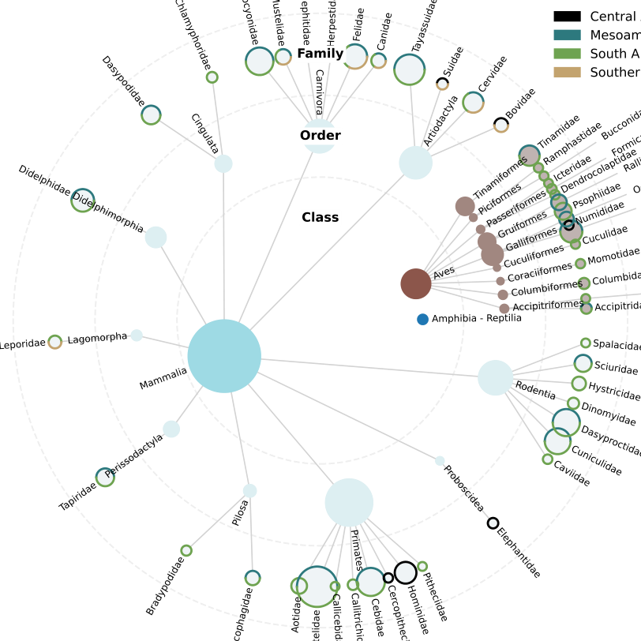
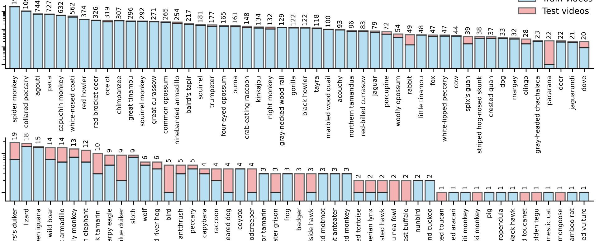
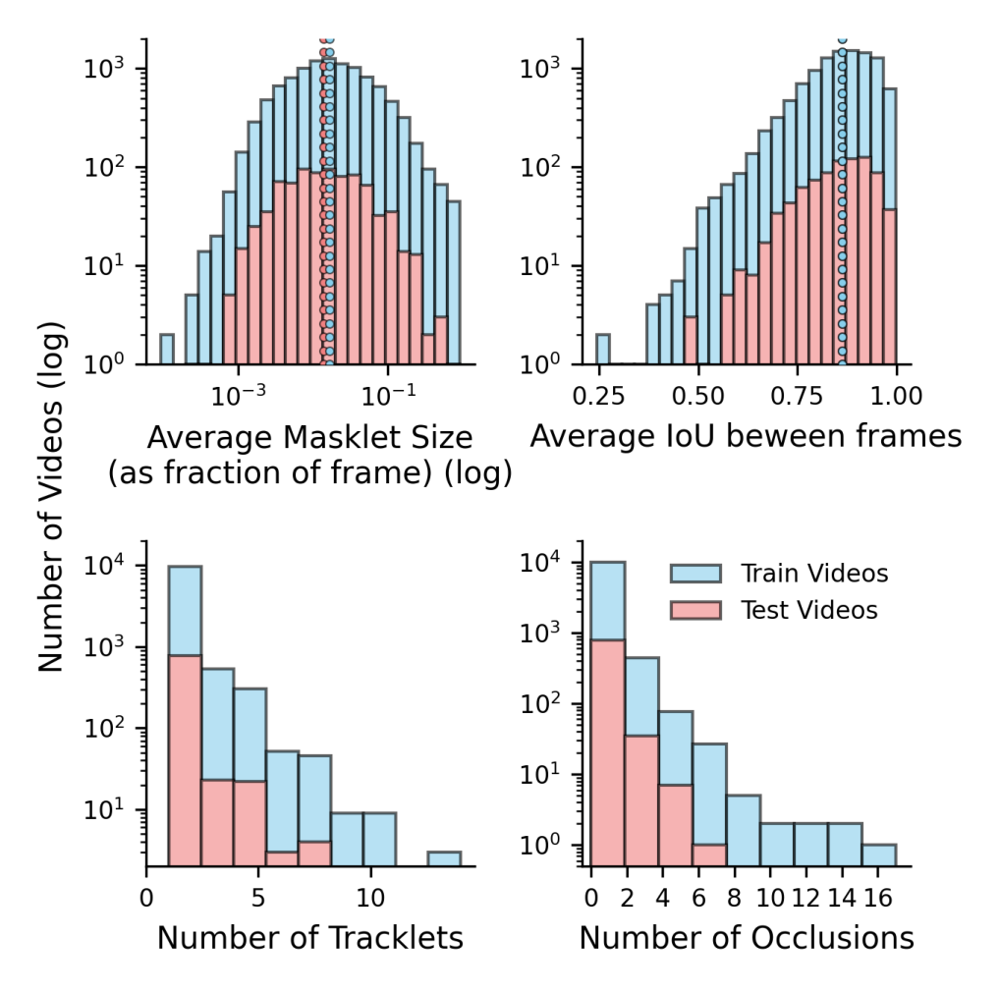

SA-FARI 深读：野生动物多目标追踪明明是物种/个体/行为识别的底座，为什么十年都没起飞？——因为缺一个同时把"规模×物种×时空多样性×人工核验 mask"四件事都做齐的数据集
导读。把一段相机陷阱（camera trap）视频里的每一只动物都在时空上抠出来并贴上身份——这件事（多目标动物追踪，multi-animal tracking, MAT）是物种丰度估计、个体再识别、行为分析这一整条生态保护流水线的底座。可是十年来 MAT 一直没有像人脸/行人 MOT 那样起飞，原因不在模型，而在底座数据集：现有数据集几乎总要在四个维度里牺牲掉至少一个——规模（专门做 MAT 的数据集标注 footage 普遍不足 1 小时）、物种多样性（多数 ≤5 种）、时空多样性（无人机数据集往往只在一个保护区拍几天）、标注质量（少数带 mask 的也多是自动生成、没有人工核验）。本文的核心张力是：这四件事真的互斥吗？能不能在可控的人力成本下一次做齐？SA-FARI 的答案是肯定的——它用 741 个独立采样点、4 大洲、10 年（2014–2024）、99 个物种类别、11,609 段相机陷阱视频，做出 16,224 条逐帧人工核验的 masklet（个体身份级时空分割序列）和 942,702 个框/mask 标注（约 46 小时），在总时长上 5× 于、物种多样性上 2× 于此前任何 MAT 数据集，且是首个大规模带人工核验时空分割 mask 的野生 MAT 数据集。关键机制是借 SAM 3 data engine 的 human-AI-in-the-loop——先用模型伪标注、再用三阶段人工核验把"穷举式分割标注"的成本压下来。两条独立验证证明它既有训练价值（把训练集喂给 SOTA 模型，HOTA 涨 20+ 点；微调 SAM 3 较基线三倍提升）又有诊断价值（按 small-mask / challenging / multi / night 切分 test 集，定量暴露真实失败模式）。

核心问题：野生 MAT 为什么没起飞？——把"为什么需要这个数据集"讲在"是什么"之前#
先讲动机，再讲数据。生物多样性正在以地质史上罕见的速度衰退；相机陷阱、无人机这类原位传感器产出的视频量，早已远超人类专家在保护行动时间窗内能处理的上限。于是有了一个明确的需求链：要做物种丰度估计、占用建模、健康监测，前提是先能在视频里把每个个体在时空上定位出来——这一步（检测/分割 + 追踪，统称 MAT）是后续物种识别、个体再识别、行为识别的共同前置。
问：既然 MOT（多目标追踪）在人/车场景已经很成熟，把它直接搬到动物上不就行了？
引导：搬模型不难，难的是没有合适的"教材"。模型进步与数据集供给强绑定——人脸/行人之所以起飞，是因为有大规模、标注精良的基准把训练和评测同时撑住了。野生动物这一侧的数据集供给恰恰在四个维度上系统性缺位。
答：论文把现有数据集的局限归纳成四条（见下方对照），核心是四个维度几乎从不同时满足：(i) 专门为 MAT 设计的数据集（AnimalTrack、GMOT、TAO）规模太小（标注 footage < 1 小时），且不含相机陷阱/无人机这类生态传感器实拍；(ii) 更大的数据集普遍只覆盖 ≤5 个物种，最全的也不超过 10 小时标注；(iii) 基于无人机的野外追踪数据集（KABR、WildLive、BuckTales）通常只在单个保护区、短时间窗内采集，地理与时间跨度窄，且常只在单一行为情境（如交配、聚群）下；(iv) 多数数据集只用边界框定位，少数带 mask 的也多是自动生成、未经人工后处理，标注质量存疑。
Takeaway：瓶颈不在 MAT 模型本身，而在"训练 + 评测"两头共用的数据底座。SA-FARI 要解决的核心问题，就是能不能在一个数据集里同时把规模、物种多样性、时空多样性、人工核验的分割质量这四件常常互斥的事做齐——这正是它把 teaser 图组织成"采集 → 专家物种核验 → 逐帧分割追踪"三段的原因。
把"互斥四维"摆到一张对照表上
下表是论文 Tab. 1（按原表逐行转写，未作改写）。对照表本身就是论文的第一条论据：SA-FARI 在地点数、物种数、视频数、标注时长、tracklet 数上同时领先，并且是少数带分割 mask、且唯一在相机陷阱来源上做到人工核验 masklet 的数据集。论文也明确说"所有数据集仍是互补的，反映不同的生态情境与采集策略"——SA-FARI 不是要替代它们，而是补上"高物种多样性 + 多区域 + 高质量时空标注"这块空白。
| 数据集 | # 地点 | # 物种 | # 视频 | 时长 (h) | # tracklet | 分割 mask | 来源 |
|---|---|---|---|---|---|---|---|
| AnimalTrack | — | 10 | 58 | 0.23 | 2k | ✗ | YouTube† |
| GMOT | — | 4 | 16 | 0.03 | 1k | ✗ | YouTube† |
| TAO / BURST | — | 51 | 429 | 3.60 | 1k | ✗ / ✓ | Varied |
| BuckTales | 1 | 1 | 12 | 0.21 | 0.7k | ✗ | UAV |
| BaboonLand | 1 | 1 | 18 | 0.32 | 1k | ✗ | UAV |
| KABR | 1 | 3 | 742 | 10.00 | — | ✗ | UAV |
| WildLive | 1 | 3 | 22 | 0.70 | 0.3k | ✓ | UAV |
| CCR | 3 | 1 | 27 | 10.00 | 12k | ✗ | Video Camera |
| MammAlps | 3 | 5 | 2,384 | 14.50 | 6k | ✗ | Camera Trap |
| PanAf500 | 12 | 2 | 500 | 2.10 | 1.5k | ✗ | Camera Trap |
| SA-FARI (ours) | 741 | 99 | 11,609 | 45.78 | 16k | ✓ | Camera Trap |
贡献：一个数据集，把四个互斥维度同时撑满，并给出可复现的基准#
- 规模 × 多样性的同时领先。11,609 段相机陷阱视频、99 个物种类别、741 个独立采样点、4 大洲、横跨 2014–2024 共约 10 年；总标注时长约 46 小时——论文称在总标注时长上 5×、物种多样性上 2× 于此前任何 MAT 数据集。
- 首个大规模人工核验的时空分割标注。16,224 条 masklet（个体身份级的逐帧 mask 序列），942,702 个框/mask；据作者所知，这是唯一一个为野生 MAT 提供大规模人工核验分割 mask 的数据集。
- 附带匿名地点信息。每段视频随附匿名化的采样点字符串（以及可得时的日期/时间戳），支持占用建模等需要空间元数据的生态分析，同时保护敏感地点。
- 可复现基准。在 SA-FARI 上系统评测了两类方法——基于物种名 prompt 的视觉语言模型（GLEE、LLMDet+tracker、SAM 3）与"通用检测器 + 强追踪器"的视觉-only 流水线（MegaDetector + ByteTrack/OCSort/BoostSort++），并给出 species-specific、species-agnostic 两种 prompt 设定，以及 5 个 test 子集的难度分析。
Takeaway：这是一篇典型的"底座型"贡献——不提出新算法，而是把训练与评测的地基铺好，并用基线结果证明"地基本身就能撬动 SOTA 模型几十个点"。
数据集统计：长尾、相机陷阱原生、个体身份级#
先看分类学与规模分布，再理解后面所有基准结果为什么落在那个量级上。
{kind=link}


把论文 §3 "Dataset Statistics" 的关键数字整理出来（均为原文披露）：
- 分类学：99 个物种类别 = 4 个纲、23 个目、53 个科、82 个属。其中哺乳纲 67 个类别（67.7%；10 目/33 科/57 属）、鸟纲 27 个（27.0%；10 目/17 科/23 属）、爬行纲 4 个（4.0%）、两栖纲 1 个（1.0%）。
- 长尾：29 个物种类别贡献了 90% 的数据，最常见三类是蜘蛛猴、领西貒（collared peccary）、刺豚鼠（agouti）。这是真实野外部署的典型长尾分布——少数物种主导，大量物种罕见出现。
- 地点集中度：至少 165 个（22.3%）采样点贡献了 90% 的数据；至少 147 个（19.8%）采样点贡献了 90% 的物种多样性。
- masklet 密度：共 16,224 条 masklet（即个体动物）；平均每段视频 1.4 条，2,623 段（22.7%）含 ≥2 条，最多达 14 条。平均 masklet 数最高的三类是红河猪（6.7/视频）、白唇西貒（3.5/视频）、非洲象（3.3/视频）。
- 采集参数：分辨率 320×194 至 2688×1234；帧率 10–60 FPS（多数 30 FPS）；视频长 0.5–90 秒（多数 15 秒）；夜间用对目标物种不可见的红外闪光录制；所有视频含音频（本工作未使用）。
{kind=link}

{kind=link}

下表是论文 Tab. 2（按原表转写），给出训练/测试划分的精确数字：
| 划分 | # 视频 | 时长 (min) | # 物种 | # masklet | # 标注 (框&mask) | # video-species pair（含负样本） | # 采样点 |
|---|---|---|---|---|---|---|---|
| Train | 10,776 | 2,545 | 91 | 15,141 | 880,361 | 31,282 | 650 |
| Test | 833 | 202 | 83 | 1,083 | 62,341 | 2,322 | 91 |
| Total | 11,609 | 2,747 | 99 | 16,224 | 942,702 | 33,604 | 741 |
Takeaway：记住三组数字——99 物种、741 地点、16,224 masklet。它们分别对应"物种多样性、时空多样性、个体身份级标注"，是这篇论文所有论据的计量单位。长尾 + 测试集独有物种，意味着这个 benchmark 天生考验泛化而非记忆。
数据采集与标注流程：把"穷举式分割标注"的成本压下来#
这一节是数据集论文的"机制核心"。动机先行：要同时拿到规模、质量、个体身份，最朴素的做法是让人工逐帧、逐个体画 mask——这在 942,702 个标注的量级上是不可承受的。SA-FARI 的关键设计，就是用 SAM 3 data engine 的 human-AI-in-the-loop 把人力从"从零画"降级到"核验/修正"。
① 数据采集（Data Collection）
把来自 7 家合作机构（Osa Conservation、Los Amigos Biological Station、IREC、IMIB、Pan African Programme、Conservation X Labs 等）的相机陷阱视频汇成一个公开数据集，覆盖 4 大洲的不同生态区（中非、南美、中美、南欧）、741 个独立采样点。相机品牌型号多样（Browning、Bushnell、Reconyx、Solaris、Spypoint、Ltl Acorn、Tetrao），按标准化流程架设（通常离地 0.3–2m，布设在野生动物通道、聚集、取食、休憩或观察点；其中 2,790 段哥斯达黎加视频来自架在树冠 8–24m 高的"树栖相机陷阱"）。相机为运动触发，夜间用红外闪光，所有视频至少含一只动物。
② 物种标注（Species Annotation）
每段视频先由提供数据的当地团队专家标上常见名（如 fox），再由 2–4 名独立标注者确认。含多物种的视频，在后续时空分割/masklet 标注阶段，通过给每条 masklet 单独指派常见名来消歧。除常见名外，还提供拉丁名（如 Vulpes vulpes）及完整分类学层级（界-门-纲-目-科-属-种），通常细到种一级。每段视频附日期/时间戳（若可得）与匿名采样点字符串。
③ 分割 mask 标注（Segmentation Mask Annotation）——三阶段
这是成本控制的关键。整套时空分割标注作为 SAM 3 data engine 的一部分完成，在 6 fps 下标注视频：
- 自动阶段：用 SAM 3 对所有"视频-物种类别"对做伪标注，生成初始 masklet；再按 IoU 去重，删掉冗余标注。
- 人工核验阶段：标注者先检查动物是否可见、可分割（排除太模糊或难以辨认的，如鸟群里的个体）；第二名标注者用 在线 SAM 2 in-the-loop 修正——删除错误 masklet、改进或补充 masklet。
- 穷举性检查（exhaustivity）：最后一轮确认所有可能的 masklet 都已纳入。这是"exhaustive annotation"承诺的兑现点——它让后面的"负样本类别增广"在逻辑上成立（见 §method）。
边界框不单独人工标注，而是从分割 mask 的空间极值平凡导出。更细的人工标注流程见 SAM 3 论文。